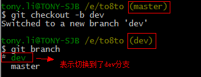
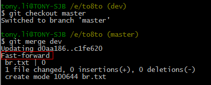
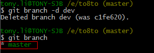

创建与合并分支
在版本回退里，你已经知道，每次提交，Git都把它们串成一条时间线，这条时间线就是一个分支。截止到目前，只有一条时间线，在Git里，这个分支叫主分支，即master分支。HEAD严格来说不是指向提交，而是指向master，master才是指向提交的，所以，HEAD指向的就是当前分支。
一开始的时候，master分支是一条线，Git用master指向最新的提交，再用HEAD指向master，就能确定当前分支，以及当前分支的提交点：

每次提交，master分支都会向前移动一步，这样，随着你不断提交，master分支的线也越来越长
当我们创建新的分支，例如dev时，Git新建了一个指针叫dev，指向master相同的提交，再把HEAD指向dev，就表示当前分支在dev上：

你看，Git创建一个分支很快，因为除了增加一个dev指针，改改HEAD的指向，工作区的文件都没有任何变化！
不过，从现在开始，对工作区的修改和提交就是针对dev分支了，比如新提交一次后，dev指针往前移动一步，而master指针不变：

假如我们在dev上的工作完成了，就可以把dev合并到master上。Git怎么合并呢？最简单的方法，就是直接把master指向dev的当前提交，就完成了合并：

所以Git合并分支也很快！就改改指针，工作区内容也不变！
合并完分支后，甚至可以删除dev分支。删除dev分支就是把dev指针给删掉，删掉后，我们就剩下了一条master分支：

下面开始实战。首先，我们创建dev分支，然后切换到dev分支：
$ git checkout -b dev -- 创建dev分支，并切换到dev分支
上面的命令相当于下面的两条命令
$ git branch dev --创建dev分支，并切换到dev分支
$ git checkout dev --切换到dev分支
我们来看下结果：
$ git branch -- git branch命令会列出所有分支，当前分支前面会标一个*号。
切换到dev分支后，我们在这个分支上进行操作，比如创建一个br.txt的文件，并提交
现在dev分支上的任务完成了，切换回master分支
$ git checkout master
切换回master分支后，再查看这个br.txt文件，发现找不到了，因为那个提交是在dev分支上，而master分支此刻的提交点并没有变：

现在，我们把dev分支的工作成果合并到master分支上：
$ git merge dev --用于合并指定分支到当前分支
这时，我们再查看br.txt，就可以看到，和dev分支的最新提交是完全一样的。
注意到上面的Fast-forward信息，Git告诉我们，这次合并是“快进模式”，也就是直接把master指向dev的当前提交，所以合并速度非常快。
当然，也不是每次合并都能Fast-forward，我们后面会讲其他方式的合并。
合并完成后，dev 分支就可以功成身退了（放心的删除dev分支）：
$ git branch -d dev --删除指定分支
删除后，查看branch，就只剩下master分支了：
$ git branch
因为创建、合并和删除分支非常快，所以Git鼓励你使用分支完成某个任务，合并后再删掉分支，这和直接在master分支上工作效果是一样的，但过程更安全。
小结：
Git鼓励大量使用分支：
查看分支：git branch
创建分支：git branch BranchName
切换分支：git checkout BranchName
创建+切换分支：git checkout -b BranchName
合并某分支到当前分支：git merge BranchName
删除分支：git branch -d BranchName